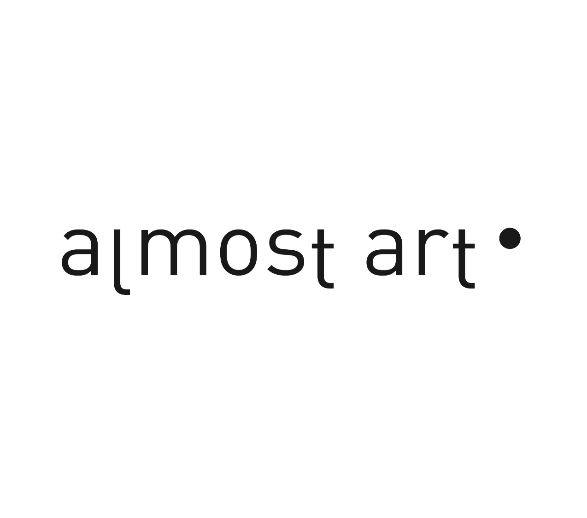

Home
About
Art Work
Publication
Press
Contact
艺术商业
由零开始：一个素人艺术节的养成
2017-9-25
VICE 创想计划
温柔的奶牛和唱戏的猫，素人艺术节进入第三年
2017-9-25
艺术新闻/中文版
第三届 Almost Art Project 素人艺术节在北京开幕
2017-9-22
CHINADAILY
Beijing's Tabula Rasa gallery hails creativity of amateur artists
2017-9-22
THE ART NEWSPAPER
China’s Outsiders get their own home
2017-2-1
VICE 创想计划
OUTSIDER ARTISTS：中国素人艺术家
2016-7-1
VICE 创想计划
看看这些由漫画家和粉丝们合力完成的旋转漫画
2016-6-29
VICE 创想计划
跟 SAMMI 聊聊素人艺术家的“儿童画”魅力何在
2016-6-3
BBC WORLD SERVICE
Beijing's first Outsider Art Festival
2016-1-30
艺术新闻/中文版
Almost Art Project北京开展，素人艺术热回潮中国
2015-7-27
CCTV NEWS
Culture News：Almost Art Project
2015-7-7
ARTFORUM
刘亦嫄谈Almost Art Project
2015-7-7
ARTNET
国内首家素人艺博会“Almost Art Project"开幕
2015-7-2